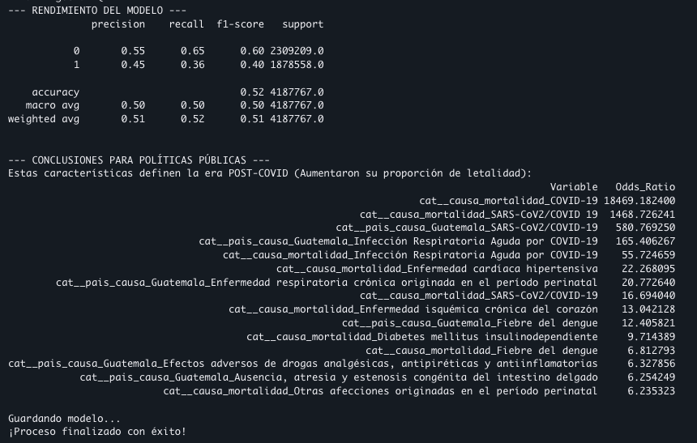

Análisis — Mortalidad y Morbilidad Pre/Post-COVID¶
Análisis estructural de mortalidad y morbilidad Pre y Post-COVID-19 — un enfoque descriptivo e inferencial sobre el impacto de la pandemia en Guatemala. Grupo 10 — Seminario de Sistemas 2, USAC (Junio 2026).
Resumen ejecutivo¶
La investigación analizó la evolución de la mortalidad y morbilidad en Guatemala con una comparativa equitativa de 5 años: el periodo Pre-COVID (2015-2019) frente al periodo de la era pandémica y su estabilización, Post-COVID (2020-2024). Combinando Inteligencia de Negocios (dashboards) con un modelo de inferencia estadística —Regresión Logística Ponderada con regularización Lasso L1— se aisló el "ruido" estadístico para identificar las anomalías causadas por la pandemia.
El hallazgo central trasciende el impacto directo del virus: la pandemia funcionó como un catalizador que exacerbó deficiencias estructurales preexistentes. El contraste de los datos revela una reestructuración completa de los patrones de supervivencia del país: la carga de morbilidad pasó de afectar principalmente a la primera infancia (Pre-COVID) a ser letal para adultos mayores crónicos (Post-COVID), detonando epidemias paralelas no atendidas y alterando permanentemente el volumen de mortalidad histórico.
Nota metodológica
Los datos del año 2025 se excluyeron del promedio comparativo: solo cuentan con el primer trimestre registrado, lo que distorsionaría las tasas anualizadas.
1. Hallazgos principales¶
1.1 El shock del volumen y la desigualdad sistémica¶
La validación del contraste absoluto en periodos de 5 años expone la magnitud del colapso del sistema nacional de salud:
| Indicador | Pre-COVID (2015-2019) | Post-COVID (2020-2024) |
|---|---|---|
| Defunciones acumuladas (5 años) | 704,000 | 873,970 |
| Promedio anual | ~140,800 | ~174,794 |
- Shock de volumen acumulado — el incremento de casi 170,000 vidas perdidas expone el saldo sistémico de la emergencia.
- Brecha regional estructural — Guatemala ya operaba con desventaja histórica: mantenía una brecha de ~−10 puntos frente a Costa Rica antes de la crisis.
- Pico pandémico — en 2021 la tasa alcanzó 51.60 × 100k habitantes (+33% sobre el máximo histórico de 2015), ensanchando la brecha con Costa Rica a −14 puntos. Aunque 2022 trajo recuperación (39.43), el promedio Post-COVID se asentó en 44.84, confirmando que el daño sistémico alteró permanentemente la línea base del país.
1.2 La paradoja de la morbilidad y el salto cardiovascular¶
El cruce de la línea base descriptiva con la inferencia probabilística revela un comportamiento epidemiológico atípico:
- Menos enfermos, mayor letalidad — los casos totales de morbilidad cayeron de 57 M (Pre-COVID) a 52 M (Post-COVID). Las afecciones respiratorias generales, que dominaban las consultas, cayeron un 31% por el distanciamiento social.
- El colapso crónico — las enfermedades cardiovasculares pasaron de representar el 4.1% de la morbilidad (Pre-COVID) a un 20% (Post-COVID).
El modelo Lasso (Accuracy 52%, validando que la mortalidad base del país se mantuvo constante) confirmó este hallazgo aislando un aumento explosivo en la letalidad de enfermedades crónicas no transmisibles:
| Causa | Odds Ratio |
|---|---|
| Enfermedad cardíaca hipertensiva | 22.26 |
| Enfermedad isquémica crónica del corazón | 13.04 |
| Diabetes mellitus insulinodependiente | 9.71 |
Inferencia
La focalización del sistema de salud en la contención del virus provocó un abandono letal de pacientes crónicos. Comorbilidades antes manejables (hipertensión, diabetes) pasaron a ser causas de mortalidad directa por la falta de control médico regular durante la crisis y los años posteriores.
1.3 Desplazamiento demográfico: de la infancia a la tercera edad¶
- Pre-COVID — la carga de morbilidad estaba hiperconcentrada en la primera infancia (1 a 4 años y menores de 1 mes).
- Post-COVID — el impacto letal se invirtió hacia la cúspide de la pirámide. El grupo de 85+ años fue el más impactado y, en general, la pandemia castigó desproporcionadamente a todos los estratos mayores de 60 años — correlación directa con el abandono del tratamiento crónico (§1.2).
1.4 Crisis perinatal y sindemia de dengue¶
El modelo de ML reveló vulnerabilidades colaterales que pasaron inadvertidas:
- Retroceso materno-infantil — pese a la caída en morbilidad infantil general, las defunciones neonatales críticas aumentaron: enfermedad respiratoria crónica originada en el período perinatal (OR 20.77) y ausencia/atresia congénita del intestino delgado (OR 6.25) muestran graves deficiencias en cirugía pediátrica de emergencia y cuidados intensivos neonatales (UCIN).
- Fenómeno sindémico — el incremento de letalidad por Fiebre del Dengue (OR 12.40 departamental, 6.81 general) expone brotes vectoriales simultáneos que agotaron la vigilancia epidemiológica.
1.5 Automedicación letal y el eje geográfico¶
- Automedicación letal — el algoritmo detectó un aumento anómalo en muertes por efectos adversos de drogas analgésicas, antipiréticas y antiinflamatorias (OR 6.32). Ante el colapso hospitalario y el temor al contagio, la población recurrió masivamente a cócteles farmacológicos caseros, derivando en intoxicaciones agudas.
- Eje de Occidente — el mapa de defunciones destaca un desplazamiento hacia el occidente del país. Después de Guatemala, Quetzaltenango y San Marcos se perfilaron como los nuevos epicentros críticos de letalidad, superando históricamente a Escuintla.
Evidencia del modelo (SageMaker)¶
Salida de consola del modelo de Regresión Logística Lasso entrenado en AWS SageMaker: reporte de clasificación (Accuracy 0.52 sobre 4,187,767 registros) y los Odds Ratio de las variables que definen la era Post-COVID.

2. Recomendaciones de política pública¶
Con base en la evidencia contrastada, se proponen estas intervenciones para el MSPAS y la SEGEPLAN:
I. Descentralización de la atención crónica (modelo "Doble Vía"). El salto de morbilidad cardiovascular (4.1% → 20%) exige blindar Centros de Atención Permanente (CAPs) exclusivos para enfermedades no transmisibles y reforzar farmacias municipales para la entrega ininterrumpida de antihipertensivos e insulina, evitando que los pacientes crónicos (especialmente mayores de 60 años) acudan a centros de alto contagio.
II. Reestructuración geográfica del presupuesto (prioridad Occidente). El cambio en el mapa de calor exige focalizar la inversión hacia el occidente: modernizar los Hospitales Nacionales Regionales de Quetzaltenango y San Marcos con redes de oxígeno independientes y mayor capacidad de camas UCI.
III. Blindaje del ecosistema materno-infantil y congénito. Emitir un decreto ministerial que declare maternidad, cirugía pediátrica de emergencia y Cuidados Intensivos Neonatales como infraestructura crítica no reasignable bajo ninguna declaratoria de emergencia sanitaria.
IV. Regulación farmacológica y alfabetización preventiva. Ante las muertes por automedicación: (a) fiscalización de contingencia sobre la venta de antiinflamatorios sistémicos y antibióticos de amplio espectro durante emergencias, y (b) campañas de prevención comunitaria bilingües (español e idiomas mayas) sobre los riesgos hepáticos y renales de las combinaciones empíricas de fármacos.
V. Homologación logística regional (cierre de brecha). La desventaja histórica frente a Costa Rica confirma que la vulnerabilidad es estructural. Instaurar mesas técnicas centroamericanas para auditar y homologar protocolos de respuesta logística y escalabilidad de camas, y generar una hoja de ruta para aumentar progresivamente el gasto público en salud como porcentaje del PIB.